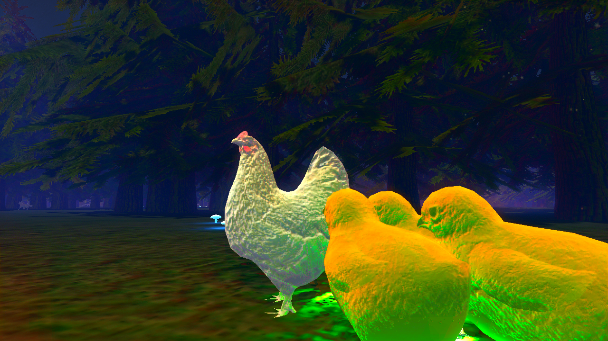
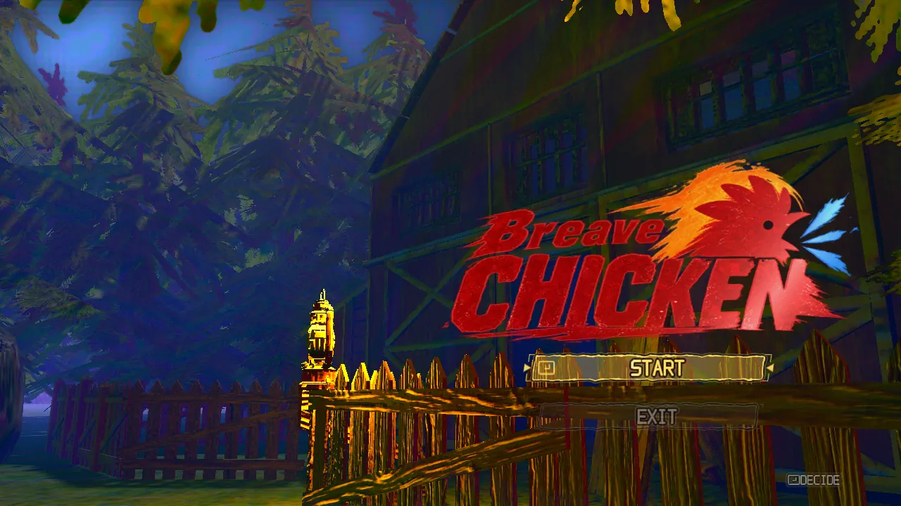
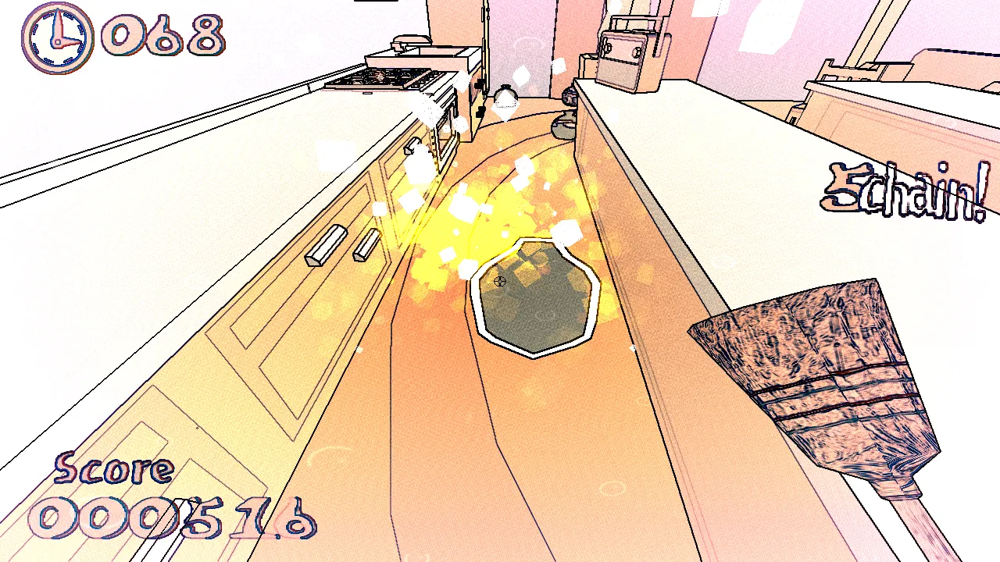
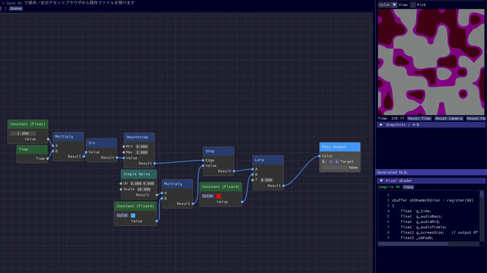
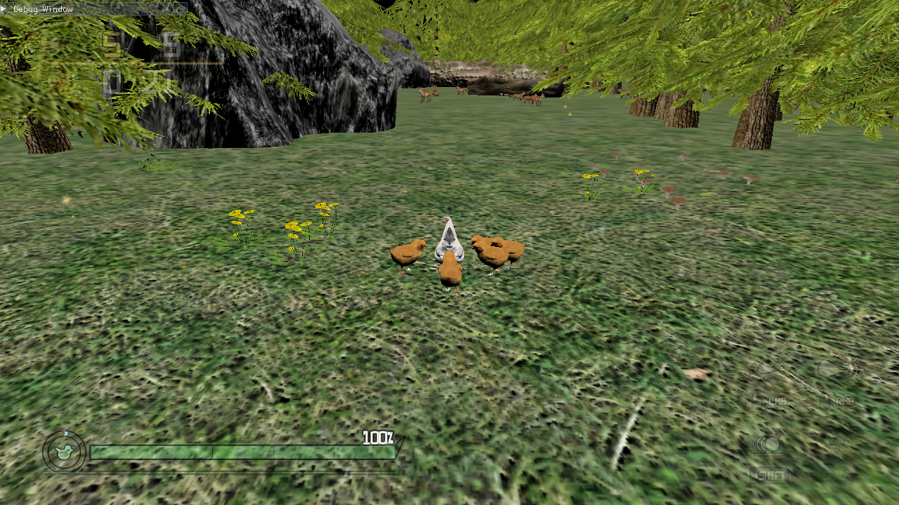
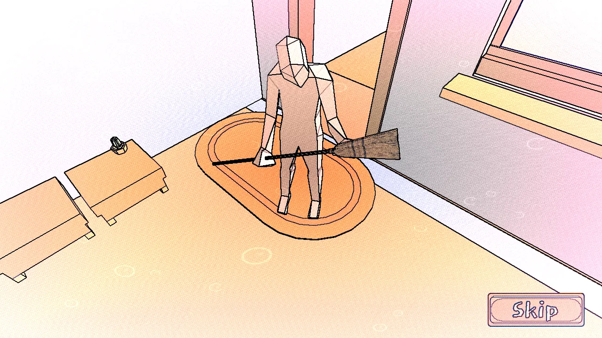
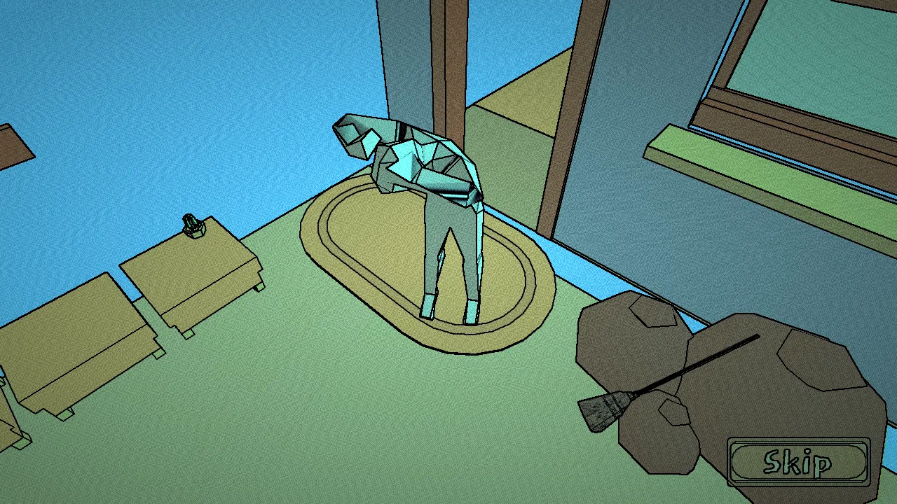
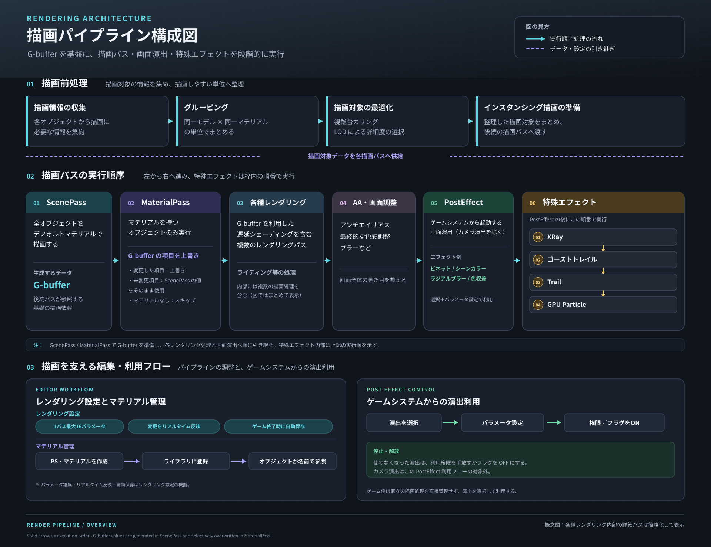
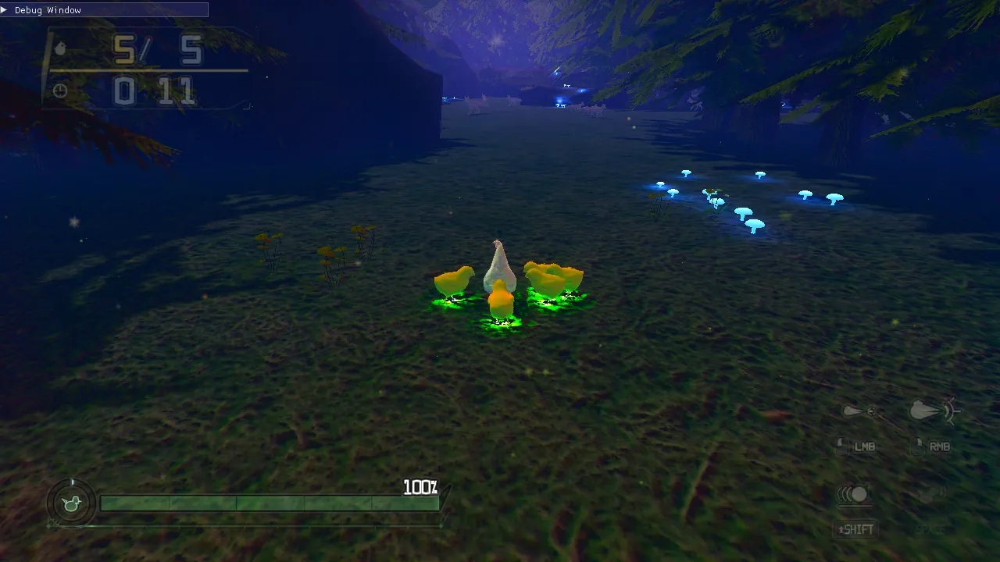
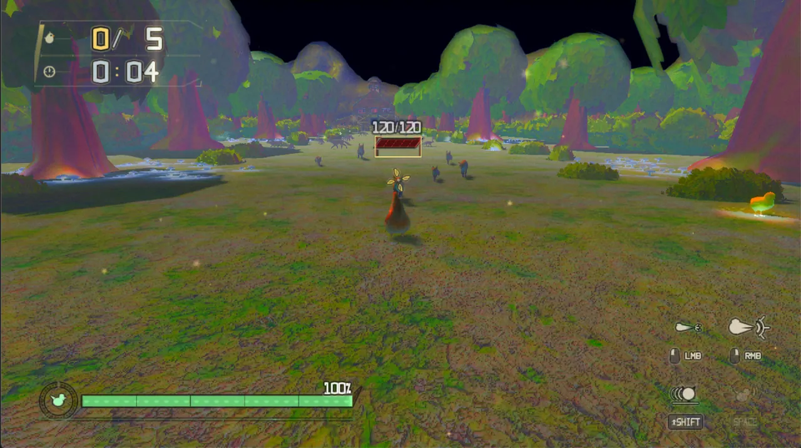

01 ゲーム／アクション代表作既読
BreaveChicken ブレイブチキン
ニワトリが5匹のひよこを連れて家に帰るアクション。キツネからひよこを守りながら戦う焦燥感と、スピーディーな爽快感が見どころです。
Game / Graphics Programmer
神戸電子専門学校 ゲームエンジニア学科2年の小田川莞大です。C++ / DirectX 11 / HLSL で、描画パイプラインからエフェクト、ゲームロジックまでを個人で制作しています。

STAGE 01 / WORKS
代表作は BreaveChicken。描画パイプラインとGPUパーティクルを自作し、アクションの手応えにつなげました。

01 ゲーム／アクション代表作既読
ニワトリが5匹のひよこを連れて家に帰るアクション。キツネからひよこを守りながら戦う焦燥感と、スピーディーな爽快感が見どころです。


03 エディタ（ツール）／シェーダ作成既読
ノードを組むだけでHLSLが自動生成され、書き出したJSONをゲーム側が読み込んで反映するエディタ。BreaveChicken と連携しています。
この技術を使った作品はまだありません。
STAGE 02 / TECH
課題、実装、成果の順にまとめています。性能の数値は実測できたものだけを載せる方針です。
Effects / Compute
粒子の挙動計算をGPU に集約
BreaveChicken で使用。粒子数などの計測値は準備中
Rendering Architecture
G-buffer を軸に6段階で構成
BreaveChicken で使用。構成図つき
Profiling / Optimization
BreaveChicken で実施。ゲーム開始時・1280×720・同じ PC で修正前後を計測
NPR / Post Process
色・法線・ID の3種類で輪郭を作る
TrashBomb で使用
Tool / VFX
シェーダエディタの機能。BreaveChicken のエフェクト制作に使用
Look Development
6段階の調整で雰囲気と視認性を両立
BreaveChicken のステージで実施。各段階の画面写真つき
BreaveChicken の同じ場面を、パイプライン適用前と適用後で比べられます。

STAGE 03 / ABOUT
小田川莞大 神戸電子専門学校 ゲームエンジニア学科2年
探求心が強く、授業の範囲にとどまらず独学でも理解を深めています。ゲームプログラミング、シェーダプログラミング、パイプライン構築を得意としています。
BreaveChicken の反省から、見た目を整えるだけでなく、G-buffer の持ち方やメモリ帯域まで含めて描画コストを設計することを次の課題にしています。
STAGE 04 / SKILLS
各スキルに、使った作品や技術解説へのリンクを付けています。
STAGE 05 / CONTACT
作品や技術についてのご質問、選考のご連絡はメールでお願いします。
件名ポートフォリオを拝見しました（小田川莞大 様）
小田川莞大 様 （会社名）の（お名前）です。 ポートフォリオを拝見し、ご連絡しました。 （ご用件）
ニワトリが5匹のひよこを連れて、無事に家へ帰るゲームです。帰り道では、ひよこを狙うキツネが行く手を阻みます。
タイトルは Breath（息）と Brave（勇敢）を合わせた造語です。ひよこを守って戦う勇敢な鶏という意味に、ゲームの中心である肺活量ゲージを重ねています。
凍結の演出は GPUパーティクルとポストエフェクトの組み合わせです。ゲームシステムは発動に合わせてエフェクトを呼ぶだけで、描画の内部処理には関与しません。
描画が重く感じたため、RenderDoc でフレームをキャプチャし、パスごとの負荷を見て原因を絞り込みました。
ゲーム開始時のフレームレートは 100fps から 180fps になりました（1280×720、修正前後を同じ PC で計測）。
| 操作 | キーボード・マウス | コントローラー |
|---|---|---|
| 移動 | W / A / S / D | 左スティック |
| 視点 | マウス | 右スティック |
| 攻撃 | 左クリック | X ボタン |
| 強攻撃 | 右クリック | Y ボタン |
| 回避 | 左 Shift | A ボタン |
| 必殺技（鳴き声） | Space | B ボタン |
GPU側の処理負荷を十分に考えずに作っており、不要な G-buffer まで生成していました。次は用途に合わせて小さいレンダーターゲットを使い、UAV を活用してメモリ帯域の消費を抑えます。
誰が見ても目に留まる作品を作りたいと考え、凶暴さと親しみやすさを併せ持つニワトリを主人公にしました。
夢の世界に散らばったゴミを、ほうきで叩いて吹き飛ばし、まとめて処理するゲームです。ゴミが連鎖して爆発する爽快感が売りです。
連鎖が続くほどスコアが上がるため、この仕組みが「3分間でどれだけ爆発させられるか」というゲームの目的に直結しています。
2Dアニメ調の見た目を目指し、G-buffer の色・法線・オブジェクト識別の3種類の情報から輪郭線を作っています。3×3 の Sobel フィルタで検出し、それぞれの強さを調整して Max で合成します。仕組みと改善の流れは技術ハイライトで詳しく説明しています。
影を出さずに平坦な見た目にし、夢の世界の非現実感を出すために NPR を採用しました。
シーンを固定してテクスチャにし、それをトランジション用の画像として使うことで、夢と現実の曖昧な境目を表す画面遷移を作っています。


| 素材 | 作者 | ライセンス | 備考 |
|---|---|---|---|
| モデルFurniture Pack | Kenney | CC0 1.0 | 改変あり |
| モデルVery Low Poly Human | Clint Bellanger | CC0 1.0 | 改変あり |
| モデルinventory items（ほうき） | sandsound | CC0 1.0 | 改変なし |
| 効果音効果音ラボの効果音（複数） | 効果音ラボ | 効果音ラボ 利用規約 | クレジット表記は任意。素材ファイルそのものの再配布は禁止 |
| BGMBGMer の楽曲 | BGMer | BGMer 利用規約 | クレジット表記は任意。販売・配信リリースは禁止 |
シェーダノードを組むことで、HLSL を自動で作成するエディタです。ゲームに組み込むときは、JSON 形式で出力したアセットをゲーム側が読み込むだけで扱えます。
シェーダを作るときに、テンプレートを作って使い回せたら楽になると考えました。さらに、HLSL を直接書くよりも、ノードを組むほうが直感的にシェーダを作りやすいと考え、制作しました。
解決したい課題：HLSL を直接書くよりも直感的な操作で、楽にシェーダを作成できるようにすること。
シェーダエディタには、パーティクルとトレイルをパラメータ操作で作れる Effect Editor も入っています。BreaveChicken のパーティクル23種・トレイル10種は、このエディタで作っています。
出力時には、次の情報をまとめて JSON として書き出します。
ファイル名は、.json の前に material などの識別名を付けて、種類を見分けられるようにしています。
エディタで作ったマテリアルやレンダリング（パイプライン）を書き出すと、BreaveChicken 側に反映されます。BreaveChicken の描画パイプライン設計にある「マテリアル・PS 管理」の元になる部分です。
ゲーム実行中にパラメータを調整する「レンダリング設定」の画面は BreaveChicken 側の機能で、このエディタの機能とは別です。
次の3点を解決できていないため、思っていたほど汎用的なツールにはなりませんでした。
次はこの3点を解決し、ゲーム側でより幅広く使えるツールにします。
Compute Shader で粒子の挙動計算を GPU 側に集約し、大量のパーティクルによるエフェクト表現とアクションの手応えを支えています。
エフェクトの表現力を高めたい一方で、パーティクルを扱う CPU 側の処理が制約になっていました。大量の粒子を使った表現を、ゲーム中でも扱いやすくする必要がありました。
CPU 側の処理負荷を抑えながら、大量のパーティクルをゲーム中に使えるようにしました。攻撃やヒット時の視覚的なフィードバックが強まり、アクションの手応えにつながっています。BreaveChicken の必殺技「鳴き声」の凍結演出にも使っています。
粒子数・同時稼働数・CPU/GPU 処理時間は計測後に掲載します。
描画処理をパイプラインとして構造化し、世界観の統一、エディタでのリアルタイム調整、ゲームシステムからの演出制御を両立するレンダリング基盤です。

| レンダリング設定 | マテリアル・PS 管理 | |
|---|---|---|
| できること | 1パスあたり最大16個のパラメータをエディタで調整し、ゲーム画面にリアルタイム反映。ゲーム終了時に自動保存。 | エディタで PS やマテリアルを作ってライブラリに登録し、オブジェクトが名前で参照する。 |
| 目的 | ソースを書き換えずに見た目を試行錯誤する。 | マテリアルを再利用しやすくする。 |
マテリアルや PS を作るエディタは「シェーダエディタ」として別に掲載しています。
不要な G-buffer まで生成していたため、次は用途に合わせた小さいレンダーターゲットと UAV の活用でメモリ帯域を抑えます。
BreaveChicken の描画負荷を RenderDoc で調べ、重いパスと原因を特定して削減しました。ゲーム開始時のフレームレートは 100fps から 180fps になりました。
解像度 1280×720 で、ゲーム開始時のフレームレートが 100fps 前後でした。
RenderDoc でフレームをキャプチャし、パスごと・描画ごとの時間を確認して、原因を次の3つに絞りました。
| フレームレート | 1フレーム（換算） | |
|---|---|---|
| 修正前 | 100fps | 10.0ms |
| 修正後 | 180fps | 約5.6ms |
修正前のコミットと現在のビルドを、同じ PC・解像度 1280×720・ゲーム開始時の同じ場面で計測しました。
| パス | 割合 |
|---|---|
| 全画面パス 13本（ライティング・ボリューメトリック・ポストエフェクトなど） | 51% |
| G-buffer を書き込むパス（5 RT + Depth） | 31% |
| 深度のみのパス（Depth-only） | 8% |
| その他（Compute・パーティクル・UI など） | 10% |
RenderDoc の Duration は処理を1つずつ区切って測る計測用の値で、実際のフレーム時間とは一致しません（GPU のクロック状態でも大きく変わります）。そのため、ms ではなく割合で載せています。2回のキャプチャで割合はほぼ同じでした。
RenderDoc の時間はどのパスが重いかを比べるのに使い、実際の速さは同じ条件でのフレームレートで確かめる、という使い分けが必要だとわかりました。
2Dアニメ調のビジュアルを目指し、G-buffer に格納した複数の情報から輪郭を検出するエッジシェーダを実装しました。色・法線・オブジェクト識別の3種類のエッジを、それぞれ強度を調整したうえで統合しています。
3Dモデルをそのまま描画した状態では、目指していた2Dアニメ調の見た目に対して画面が平坦に感じられました。そこで、1種類の情報だけに頼らず、色の変化・形の変化・オブジェクトの境界の3つから輪郭を出す仕組みを用意しました。
どのエッジも 3×3 の Sobel フィルタで検出します。Color・Normal・ID にはそれぞれ強度の倍率を持たせ、輪郭の出方を個別に調整できるようにしました。最終的なエッジの強さは次の順で決めます。
シェーダエディタの機能として、Particle Editor と Trail Editor の2つの独立したエディタを実装しました。パラメータ操作でエフェクトを新しく作れるほか、既存のアセットを読み込んで編集できます。設定は JSON 形式のアセットとして保存・管理します。
パラメータを調整してパーティクルエフェクトを新しく作れます。既存の Particle アセットを読み込んで編集することもできます。
Particle Editor とは独立したエディタです。パラメータを調整してトレイルを新しく作れるほか、既存の Trail アセットを読み込んで編集できます。
| データ | 内容 |
|---|---|
| 名前 | Particle アセットの名前 |
| レイヤー | パーティクルを構成するレイヤー（名前・有効状態・オフセット） |
| バースト設定 | 粒子数・起爆タイミング |
| パラメータ | パーティクルの挙動・形状・色・サイズなどの設定 |
| テクスチャ設定 | テクスチャ関連の設定 |
テクスチャを使う設定はありますが、現在のパーティクルは SDF で形を作っているため、通常はテクスチャを使っていません。
BreaveChicken のステージを「夜の森の中を進む、神秘的で少し不気味な空間」に近づけるため、明るさ・色調・コントラスト・フォグ・オブジェクト配置・発光表現を6段階で見直しました。1つ直すと別の問題が出るので、画面で確かめながら調整を繰り返しています。


| 色・要素 | 画面での役割 |
|---|---|
| 青・紫 | 夜の森、遠景、空間全体の雰囲気 |
| 緑 | 地面や植物、キャラクターの足元の光 |
| オレンジ | ひよこのシルエットを背景から見分けるための色 |
| 白 | プレイヤーのニワトリを見分けるための色 |
| キノコの光 | 暗い森に点在する、神秘的なアクセント |
距離減衰フォグは、遠くのオブジェクトほどフォグ色に近づくように調整しました。距離の減衰が足りなかったため、ワールド座標を基準に距離を扱う方式に見直しています。
キノコの発光は、明るければよいわけではありません。強すぎると暗い森の雰囲気を壊し、光源ばかりが目立つため、強さを抑えて環境のアクセントとして扱いました。ニワトリとひよこの足元の緑の光は、暗い画面でキャラクターの位置をつかむ手がかりにもなっています。
1つの問題を直すと、別の問題が出ることを何度も確かめました。
効果を1つずつ強くするのではなく、画面全体の色調・視認性・空間表現のバランスを見ながら調整することが大切だと学びました。